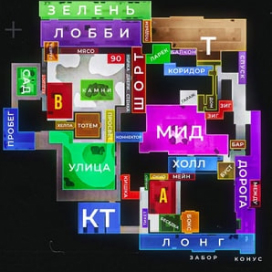

Добро пожаловать!
Привет! Практически каждому любителю мобильных игр известна такая игра, как Standoff2. И не удивительно, ведь данная игра реально заслуживает внимания из-за своего интересного геймплея и веселья во время самого игрового процесса. Однако,
игра эта не такая уж и простая. Для того, чтобы хорошо в ней себя показать, нужно обязательно иметь знания карт, уметь правильно передвигаться, знать куда лучше кинуть ту или иную гранату, фишки и многое другое.
Многие игроки часто сталкиваются с такой проблемой, и из-за этого даже их друзья могут перестать с ними общаться. Так как же запомнить базовые знания, чтобы постепенно улучшать их и стать хорошим игроком в Standoff2? Этот сайт пможет
решить вашу проблему,и после просмотра всех статей вы точно улучшите свое умение играть и замотивируетесь идти дальше, прямо к победе!
Так как же мне быстро запомнить всё что тут написано и применять это на практике?
Никак, друг мой! Каждая вещь приходит с опытом. Ты не сможешь в первый день научиться делать двойное сальто назад или верстать сайты профессионального уровня. Нужно долго и упорно тренироваться и практиковаться, чтобы в конечном итоге достичь желаемого результата.
Можешь позвать друзей или знакомых, которые помогут тебе практиковаться, учить разные позиции на карте и тому подобное. Гланое - не теряй мотивацию, и иди к своей цели!
Есть ли способы, которые помогут ускорить процесс поднятия умения играть?
Определённо есть. Некоторые даже расскажу прямо сейчас!
Для тех, кто хоть раз заходил в стендофф, не секрет, что есть такой игровой режим как тренировка. Там можно настроить поведение манекенов под свои нужды, взять любое оружие и тренировать свой аим(так называют умение точно стрелять)

Вот тут-то и первый способ! Составь свой график тренировок, и за неделю тренировок по правильному графику можно уже неплохо повысить свой аим!

И второй способ. Можно создать кастомное лобби, и просто бегать по карте, запоминая разные позиции на карте. Довольно простой, но эффективный метод поднятия знаний локаций.
Трейд - это неотъемливая часть игры, благодаря которой можно получить красивые скины, ножи и прочее. Основная идея трейда - купить один скин, и продать его подороже. Пусть даже в плюс на несколько голды, но дороже.
Мы покажем вам разные способы трейда, за счет которых можно будет получить свой первый нож. Все они по своему хороши, выбирайте что хотите!

Трейд
Ловля скинов по лоу-прайсу
Суть: вы покупаете какой-то дорогой скин за маленькую цену, и продаёте за его настоящую.
Вам понадобится на балансе не мене 4 голды. Начните с рарок. Найдите какой-то рарочный скин на котором будет нормальная активность, и стоить будет примерно 3-4 голды. Перое что вы должны сделать - посмотреть на цену последнего слота.

Основная часть трейда
Если цена запроса повысилась даже хотя бы на 1 копейку - жмите кнопку заказать! Если вам не прилетает скин за 0,03 голды или за другую низкую цену, то отмените запрос и начинайте заново.Одновременно с этим ОБЯЗАТЕЛЬНО следите за заказами, чтобы никто не выставил на продажу этот скин дешевле, чем ваш подготовленный заказ. Ваш подготовленный заказ должен быть ВСЕГДА дешевле последнего выставленного скина.


Иначе вы просто купите скин за его полную цену, поэтому регулярно придется менять цену заказа. И так постепенно вы наберете побольше голды и сможете ловить скины подороже, и так далее. Помните, что вы всегда можете задать нам вопрос, найдя кнопку “связаться с нами”, и мы с радостью на него ответим!
Каким образом вообще возможно получить скины по такой низкой цене?
Допустим, есть два человека. Один человек - получающий, второй - передающий. Задача второго человека - практически бесплатно передать скин первому человеку, поэтому он ставит такой низкий ценник. А мы эту передачу ловим, и в итоге сами получаем скин за копейки. Может показаться, что это подло и плохо портить такой момент людям. Однако вы в этом не виноваты. Это ошибка человека в том, что он неправильно передал скин. И к тому же, это обычное дело в стендоффе.
Довольно часто нам нужно выполнить задания для прохождения голд пасса. Особенно это нужно для тех, кто приобрел Gold pass, чтобы как можно быстрее добраться до заветного ножа!
В этом посте вы получите парцию советов по правильному выполнению заданий.

Советы по выполнению заданий
Всегда выполняйте ежедневные задания в первую очередь. За все ежедневные задания можно получить аж 8 звёзд - это практически целый уровень!


Еженедельные задания нужно выполнять сначала самый сложные, а потом уже переходить к более лёгким. Если еженедельное задание нужно выполнить в каком-то ранговом режиме, то его можно оставить на потом, но главное- не забыть выполнить.
А можно ли выполнить все задания быстро?
Можно. Есть несколько способов, которые помогут вам быстро пройти задания и поскорее добраться до нужного уровня!

Первый способ - банально пригласите друга или знакомого в игру и договоритесь о том, чтобы он помог вам выполнить задание. Можно также поискать людей в разных соцсетях!

Второй способ - заходите в любую игру, и в общем чате просите помочь вам выполнить задание взамен на то, что вы поможете человеку выполнить задание в ответ.
Не знаю как у вас, но лично у меня так сложилось, что я в одночку за первые 3 дня выполнил почти все задания! Так что если ни один из способов вам не помогает, то можете целенаправленно заходить в игру и выполнять задания, пока оно не будет сделано.
Позиции
Как же быстро докладывать своим собзникам информацию про врагов? Или как быстро сказать своему тиммейту, на какую позицию ему следует пойти? Достаточно выучить названия позиций на карте. В основном это приходит с опытом, но вы можете смотреть видео на ютубе или искать картинки с обозначением позиций на карте, и запоминать абсолютно всё. Тут не будет ничего сверхъестественного, потому что тут играет роль только практика и ваша память.

Начнём с того что раскидка в стендоффе - это то, куда и как правильно нужно бросить гранату, чтобы она задела/подействовала на определённую часть карты
Раскидок в стендоффе очень и очень много, их всех просто нельзя показать на этом сайте! Поэтому по старой-доброй методике - находим в ютубе раскидки на нужной вам карте, смотрим, заучиваем, и пользуемся!
И нет, мы сейчас говорим не про закуп скинов на рынке, а про закуп оружия во время игры. Важно понимать, что экономика - это сложная система, и одна ошибка - и ты можешь остаться с плохим оружием на большое количество раундов. Итак, приступим.
Что закупать на первых трех раундах?
За обе стороны не нужно покупать сразу же новый пистолет на первом раунде. Все пистолеты в игре при попадении в голову убивают врага с одной пули. Тратиться на новый пистолет - бессмысленно.
За сторону спецназ на первом раунде купите гранату, флешку и кусачки. Гранаты обеспечат безопасные проходы в разные места, а кусачки позволят быстро обезвредить бомбу. За сторону террористов можно взять либо две гранаты которые были называны выше, или все которые есть.
На втором раунде за сторону спецназ возьмите самый дешевый дробовик, кусачки и одну обычную гранату. Второй человек пусть берет какое-то огнестреьлное оружие, и кусачки с гранатой. Это делается для того, чтобы оба тиммейта могли стоять на разных позициях - и в закрытых, и открытых. За сторону террористов то же самое. В случае поражения всё то же самое, только за спецназа обы человека пусть возьмут самые дешевые пушки.
На третьем раунде для двух сторон рекомендуем взять п90 и одну-две гранаты. Спецназ, конечно же, еще и кусачки. В случае поражения повторяем закуп второго раунда.